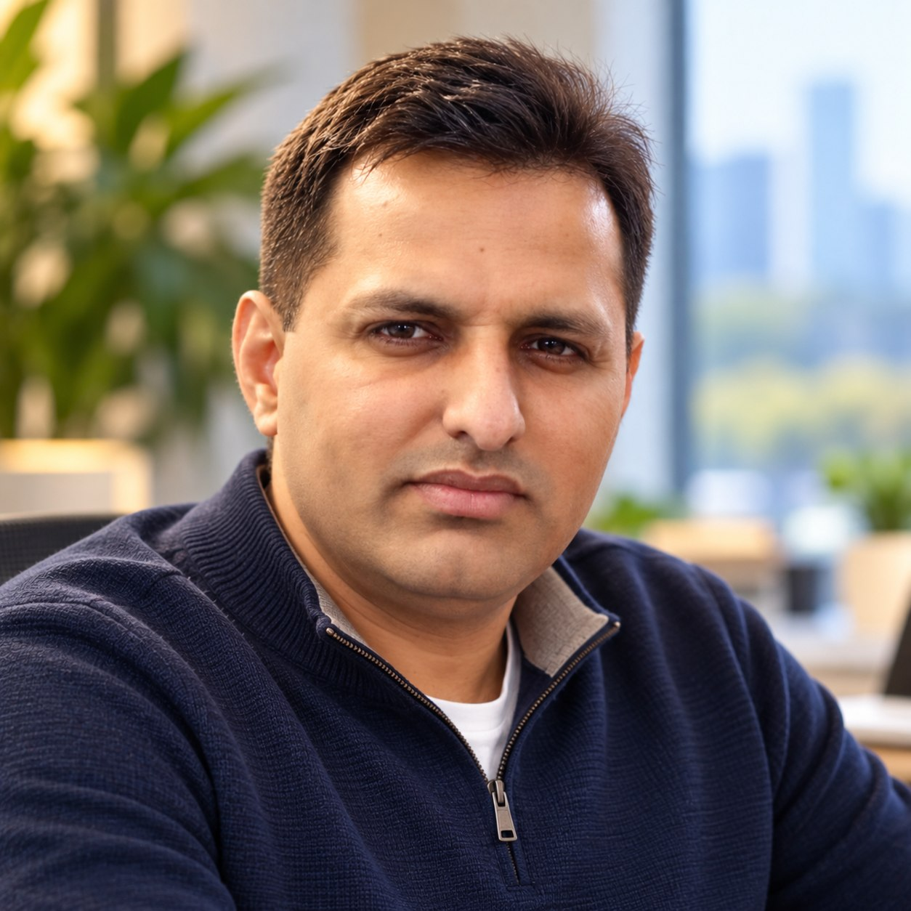

THE PERSON BEHIND THE VISION
FOUNDER / SPATIALYNX
Kamran Aslam.
Bringing over two decades of experience in geospatial technologies, enterprise information systems and digital innovation.
Connecting technical depth with a practical understanding of how spatial information can help organizations solve complex challenges.

01 / PROFESSIONAL JOURNEY
Experience across systems, data and the real world.
My work has always centered on using technology to make complex information more useful.
Over more than 20 years, I have worked across enterprise GIS, spatial data infrastructure, geospatial software development and information systems engineering, bringing together technical solutions and organizational requirements.
My experience spans geospatial platform design, data integration, automation, Earth observation and spatial analytics, with a focus on building reliable solutions that people can use in practice.
Through Spatialynx, I am bringing these capabilities together to explore new opportunities in geospatial intelligence, remote sensing, AI-enabled analytics and specialized digital solutions.
02 / AREAS OF EXPERIENCE
Grounded in technology.
Focused on outcomes.
Enterprise GIS & Information Systems
Geospatial platforms, system integration, spatial databases and enterprise data workflows.
Earth Observation & Spatial Analytics
Satellite and UAV data, remote sensing, mapping and geospatial analysis.
Software & Digital Solutions
Custom applications, Python automation, WebGIS and decision-support tools.
Technology Strategy & Collaboration
Turning technical requirements into practical solution approaches and collaborative projects.
03 / CONNECT
Let's turn ideas into impact.
Open to meaningful conversations about geospatial technologies, digital solutions and collaborative opportunities.